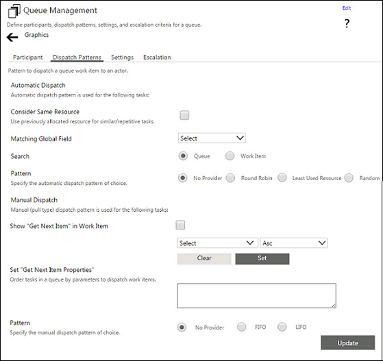

No
Dispatch Patterns Tab
Click the Dispatch Patterns tab to open the dispatch patterns setting view of the Queue Management window. You can either configure automatic dispatch settings or manual dispatch settings here.
The following image shows the Dispatch Patterns tab of the Queue Management window:

Automatic Dispatch
You can configure the following settings for automatic (or push type) dispatch of tasks:
- Consider Same (Previous Allocated) Resource For Similar/Repetitive Tasks - You can check this option to allocate a task, which is similar to a previously allocated task, to the same user to whom it was allocated in the first case. This can also be used to consider the same user for tasks that are repeated.
- You must specify the global field to be used to identify if a task is similar to an earlier one or is repeated by selecting from the Matching Global Field drop down.
- Specify the location to search for the matching task using the Search In radio buttons.
- Queue - If you select this option, a matching task will be searched for in the queues.
- Work item - If you select this option, a match will be searched for in the Work items list.
- Specify the automatic dispatch pattern next by selecting one of the following radio buttons in the Specify Dispatch Pattern option:
- No Provider - This option specifies that no provider is available for dispatch. This option cannot be selected for both Automatic and Manual dispatch. The Dispatch Pattern has to be set for at least one mode.
- Least Used Resource - This option ensures that the queue control identifies the participant who has the lowest work load to assign the task to.
- Round Robin - This option enables round robin task allocation where the participants will be allocated tasks by rotation.
- Random - This option sets the queue to allocate the tasks in a random fashion.
Manual Dispatch
You can configure the following settings for manual (or pull type) dispatch of tasks:
- Show "Get Next Item" in Work item - You can check this option to enable the display of the Get Next Item option in the Work items list. Participants can click this option after completing the allocated task to get the next task in the queue. You must set the following properties for the Get Next Item option:
- Do OrderBy - You must specify the order in which tasks in the queue must be sorted by selecting the parameters from the Do OrderBy drop-down and clicking Set. The parameters are separated by commas and can be applied in ascending or descending order by selecting Asc or Desc from the drop-down provided.
- Specify the manual dispatch pattern by selecting one of the following radio buttons in the Specify Dispatch Pattern option:
- No Provider - This option cannot be selected for both Automatic and Manual dispatch. Dispatch pattern has to be set for at least one mode.
- LIFO - This option sets the queue to allow users to access the tasks on a Last In First Out basis.
- FIFO - This option sets the queue to allow users to access the tasks on a First In First Out basis.
After setting the Dispatch Patterns, click Update Dispatch Patterns to save the settings.